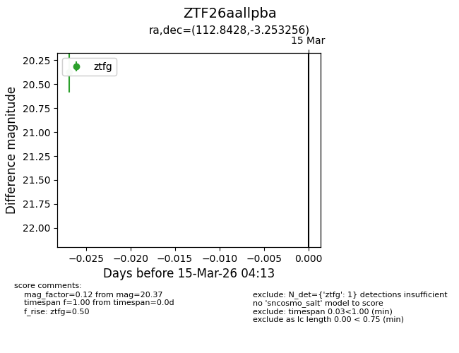
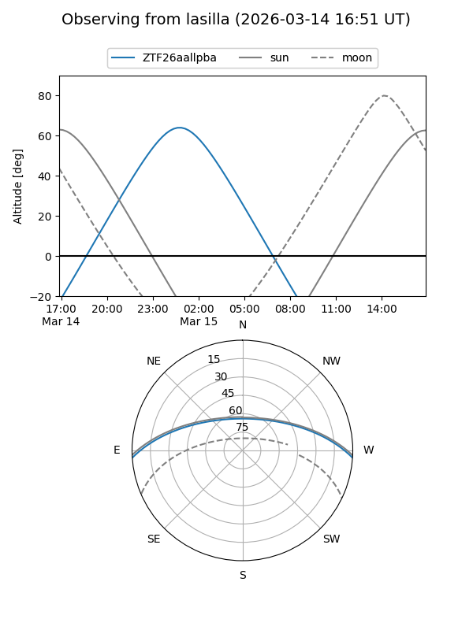
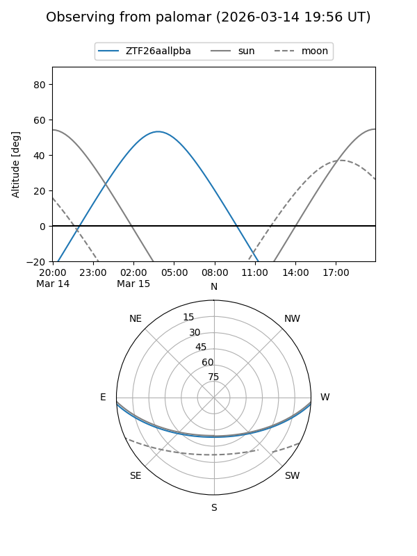

ZTF26aallpba
Target ZTF26aallpba at 2026-03-15 04:16
Aliases and brokers:
FINK: link
Lasair: link
ALeRCE: link
alt names
ZTF26aallpba (ztf,fink_ztf)
Coordinates:
equatorial (ra, dec) = 112.8428,-3.25326
equatorial (HMS+DMS) = 07:31:22.27,-03:15:11.72
galactic (l, b) = (220.4307,+7.36353)
Flags:
Photometry:
last ztfg=20.37
1 ztfg detections
Lightcurve

Visibility


Additional plots